The World Famous Ant Emoji Comparison Tumblr Post by https://curlicuecal.tumblr.com/ is very popular, and I'm inspired to do a similar thing with the ducks emoji! If the link above is broken or doesn't work anymore, here is a link to an image of the post so you can read it: http://ducksofthe.world/pages/articles/antemojis.png.
What's lovely about the world we live in is that we not only have thousands of cute little pictures that are standard in all programmable consumer devices worldwide, but we also have a suite of variations for different styles, in the same way as we have a plethora of fonts available for Roman, Cyrillic, or the Chinese Languages. What we will be doing here is basically the same as looking at different letter "A"s in Impact, or Times New Roman, or Courier, or Arial, or you name it! But this has the added benefit of having lovely duck faces for us. So there you go. Remeber Wingdings?? or Dingbats? Those were pretty good.
Emojipedia has a nice listing of the duck emojis. I think they have a nice system for naming webpages, where the address for the character you want is just https://emojipedia.org/<<name of thing>>, so you can type in your emoji that you want to look at without actually navigating to their website or goodlging it first. That's how I did it, anyway.
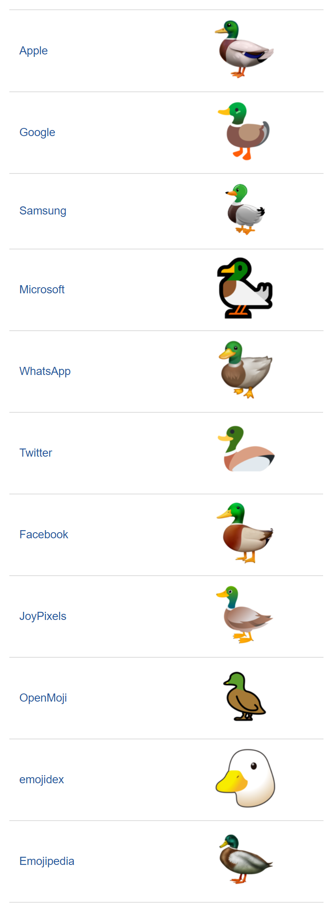Those are all the ducks emoji it lists, but also, each one has emoji that the companies used to use in the past. We will look through all of these and evaluate their authenticity.
Apple's duck emoji is pretty good!
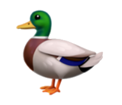It's got a realistic coloring and dimensions, but a sort of cartoony, approachable eye and head. Apple knows that these are meant to be used as cute communication tools, but also respects the legitimacy of duck. I like the chubby cheeks that press up to make a happy eye. The prominent forehead doesn't blend into the beak in a distinctively un-duckline way, though, which makes me a little uncomfortable. Also, the little purple band thing peeking out from under the wing is great! but they forgot to do the other side? I mean the band is only so wide, and doesn't go to the tip of the wing like it looks here. Also I think the tail of a mallard duck is black? But really, this is all nitpicky, and overall this is very cute. Nice!
I like Google's duck emoji!
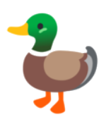I named the picture file "googleduck.png", and it's fun for me to imagine that Google Duck is a service or app you could have on your phone or web browser. I wonder what it would do!! Google's duck follows the blob-like emoji with borderless, simple images reminiscent of clean construction paper cutouts. Look at the curve of that beak! Lovely. The wings look like little pointy clouds and the feet are separated in a cartoony way that is just nice. I like this, and it's nice! It looks like they also went for the cute cheek thing. I wonder which was made first?? Apple and Google are often in competition, so I hope the cheek thing isn't really contentious. I like the less saturated colors here. the gradient on the neck seems out of place, but maybe that's just how they decided to do it.
Woah! That first android duck is very different! The implication is that they made a large bodied duck, I think. And it's standing more upright, which is a thing that ducks definitely do. Those eyes are very traditionally cartoony, and the legs are separated and flattened against the plane in an ancient Egyptian style. the eyes are cute but they do look a bit spooked!
The second Android duck I like more. The dark teal of the head is quite fetching, if you ask. I would like to see more duck emoji in the future featuring this color. They also began with the neck gradient. How interesting! They also modified the eye to appear to look at something, which is nice, but the visible sclera is still offputting. I can't wait until they just make the eyes entirely black! They already have, just above it. They also pushed the legs together to imply more 3D. It looks good, but I applaud the more recent compromise in the modern image.
Holy crow do I still have a lot of ducks to write about.
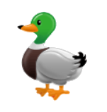Ok, I'm feeling you, Samsung. The white reflection in the eye adds some soul and intelligence to this duck. The duck is shiny, in a very Mac OS X way. I can't fault Samsung for this, especially since mallard ducks do have reflective feathers when they're well-preened. In general I found the overly bright, smooth reflective surfaces on app icons to be a strange even 20 years ago. This is kind of weird style to still use, but that's just what people want these days. This duck has a large head for being cartoony. It also has a black spot on the tip of the beak. Do ducks have spots like this? Are they like birthmarks or are they common among every duck in the species? Honestly, I can't really remember the last time I saw an actual, real duck.
Samsung also has made some changes to it's duck. The original is REALLY goofy! It's obviously a baby duck, or maybe a classic rubber duck? The flat feet and strange elongated body and tail are striking artistic choices. They were probably trying to make a name for themselves. What the heck was the TouchWiz 7.1? Maybe it was only in Korea.
The second duck, The Experience 9.0 duck, is a close predecessor to the modern One UI 2.5 duck emoji. I kind of... like it... a lot. I think I prefer this huge-headed version. But I like strange things. I think I will be continuing to draw ducks, and I will experiment with huge headed ducks. Let's do it now!!
I'd like to point out that the duck's head is large in comparison to body primarily due to an actual size disparity rather than perspective.
Another bold move.
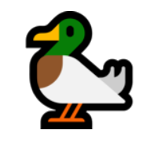Wow. This is one stylized duck. The stance, head, beak, wings and tail, every aspect of this duck save for its coloration, says vulture to me. The bold outline is really something. I suppose they were trying to maximize visibility when placed on a small text line, but it seems extreme in comparison to the others. The angles. The angles! I am sure there was a well-detailed style guide for making emoji at Microsoft, which the artist had to adhere to. The Gentle curves of a duck's elegant body are hard to capture when stifled by standards. Let the artists free!
WhatsApp is from China I think. The Chinese are famous duck eaters. We must approach this with caution.
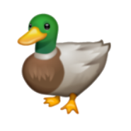Ok. I mean, this is a duck. There's something... off. I'm from the USA, and not from China, although I would like to visit someday. Maybe I'm just starting to feel tired, but this duck is creeping me out. It looks like there is too much weight in front of the feet, frankly. I hope this duck is O.K. But most ducks look kind of lopsided. They are meant to swim and fly, not to be trapped on the land. All of these emoji should feature ducks in their prime habitat. Maybe the WhatsApp artists were hungry for their favorite food, duck meat, and were dreaming of ground ducks, where they would have the most trouble escaping. Ok, also, the shadow under the "chin" is really strange to me. It looks like it's outlining the beak, so the bright spot above is confusing. But if the shadow is from a strong chin, then it is kind of not shaped like a duck at all?? and even if it were, the featheres above would not be quite so bright since they would be shadowed by the beak. I don't know what to think. It also has a weird 3D-ness that could either be drawn or actually rendered. I can't tell. It looks like it should be a non player character in a video game that just stands around waiting for you to walk up and talk to it. I don't know what to think. I don't know.
Here we go! A lovely swimming duck!!
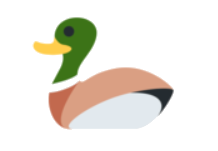I hope it's swimming, or else its legs are missing, haha! This duck takes my favorite parts of the Google duck (it still sounds like an app!) with its simple coloration and design. I like the large black eye for cuteness. The pointed backside of the head reminds me of some duck types, that have pointed feathers on the back of their heads. There's something nice about this duck, like a nice cake you'd want to eat, but not eat because you want the duck to live free. This duck is intoxicating.
Facebook has a proud duck.
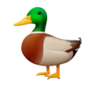Facebook's duck is a safe bet. It has shading on the head that implies a more realistic cheek shape, and is the first in this list to avoid the alluring mistake of putting in a sharp corner on the top of the beak. And boy howdy, that chest is PUFFED. And they put in a cute little curl on that tail? I don't think there's anything wrong with this duck, but I'm feeling empty inside. I don't know. Maybe I'm ducked out?
The old facebook duck is fine. It's got that cute pointed tail still. They since fixed its droopy breast, and then some, along with the beak crease.
What the heck is JoyPixels?
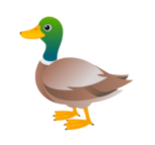Back to the cartoonish sclera, but this one has way more expressiveness available to it. I'd like to see this duck animated. The forward-leaning legs and wide stare makes it look excited for whatever it's looking at. I'm gonna look up JoyPixels now. Ok, it looks like a free emoji keyboard you can put on a lot of devices. I may have to check this out for myself. The animals are cute. This even has a little black spot on the tip of the beak. I guess that must be a duck thing.
Again, I haven't heard of this one. The name suggests the source is something like that for the last duck, but they took a very different turn with their style!
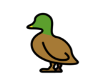It's almost the "dual" of the JoyPixels duck! It features thick outlines like the Microsoft duck, but without the sharp angles, instead opting for smooth contours. The short beak and stance makes this duck look like a juvenile. And, you know what? Baby ducks are ducks too. Never forget that, and never let that negatively color your opinion about duck art. Making all these emoji for an open source or freely-copyable project must be a huge undertaking. This one also really reminds me of Egyptian heiroglyphics, even though the legs are side-by-side. Why do I think that? Maybe the lack of eyes gives it a mysterious aspect.
emojidex (sic) is probably some emoji encyclopedia similar to Emojipedia. How did I come to that conclusion? Because of the "emoji" and "dex" put together. I don't really know what "dex" means but it's from "rollodex" which was a brand for a thing you could use to keep address book cards in so you couuld make changes without just crossing parts out of taping new addresses in.
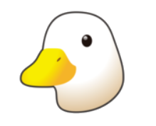Oh no!! This one doesn't have a head!! Haha, I'm just kidding, it's just a picture. But wow! Talk about a whole new world. In addition to just being a head, (which is still distinctively duck-shaped,) it also is not a green headed duck like a mallard. I don't know what kind of duck is just white with a yellow beak. I know they exist, because I've seen pictures and drawn them that way too, but I don't know what it's called. This one is cute. I like it. It could double as a goose if you wanted, too. Also, I looked up the Unicode document introducing the duck emoji, where they recommend animal emoji should only be animal heads, since people prefer animal heads in texts. Really? I'm surprised by that. I'd think you'd want to see the whole animal so you could get its shape. But maybe people want to use just the head so you can have lots of different expressions? But then why don't we have a ton of duck emojis with different emotions. That's even what the name emoji is based on. Someone at Unicode should look into that! Here's the link to the document. The Unicode code for the duck emoji is U+1F986.
This is Emojipedia's, the site I used to get all these duck pictures from.
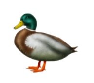The most photorealistic duck in the bunch. But the wing kind of weirds me out. I don't know. I think I'm just kind of fried on ducks for today. Do ducks have those sharp corners on their breast like that? What's going on with the frilly shoulder? Is that normal? It might be. My head kind of hurts, and I'm really glad the last few of these didn't have variants or I'd still be writing this. I hope this was useful for you.
{kind=link}